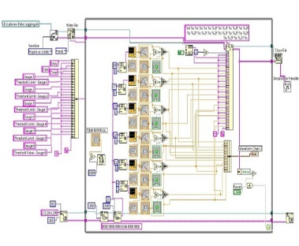

Variable Energy Cyclotron Center (VECC), Kolkata, India
Project:
Study and Development of a Data Acquisition & Control (DAQ) System Using TCP/Modbus Protocol
Synopsis:
 The aim of the project was to develop a HMI (Human-Machine Interface) with the help of which a person could remotely control and monitor the Vacuum measurement system. The Vacuum measurement system was constructed using a DAQ (Data Acquisition & Control) implementation instead of a PLC based implementation. The system is to be installed in the Superconducting Cyclotron section of VECC.
Advisor:
Dr. Tamal Kumar Bhattacharya
Duration:
Dec.' 2012 - Jan.' 2012
Download:
All India Radio, Akashbani Bhawan, Kolkata, India
Project:
Radio Broadcasting of All India Radio: Kolkata
Synopsis:
The project involved gaining technical knowledge about the Broadcast Studio. Knowledge about transmitter, principal features of 1KW Radio transmitter, transmitter block diagram, switching networks, Earth station and Simulcast Earth Station etc were also gained.
Duration:
10th Jun.' 2013 - 22nd Jun.' 2013